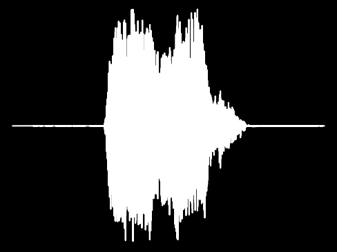
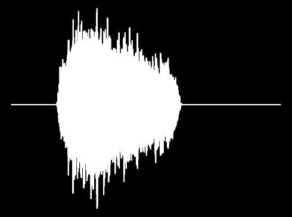
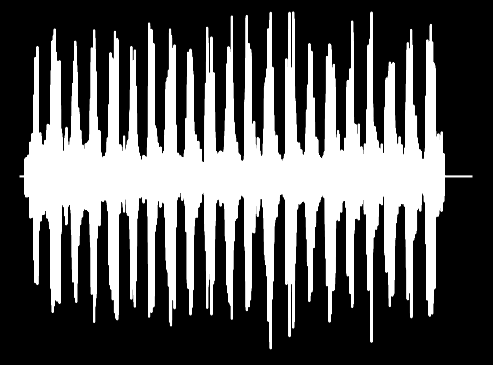
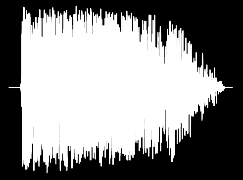
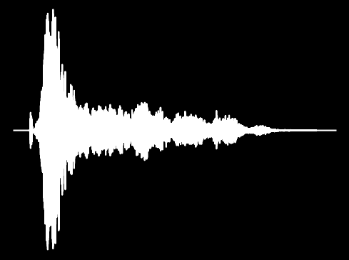
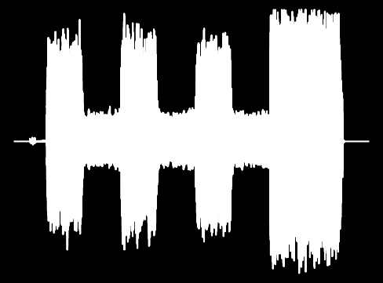
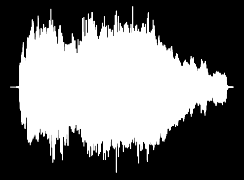
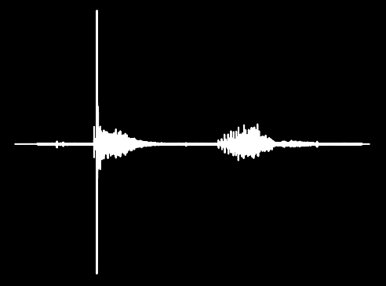

Počítače a zvuk
Zvuk je složitý fenomén popisovaný jako pohyb částic média (vzduch, voda). Pro člověka začíná zvuk v ušním boltci, který ho zachytí a převede do zvukovodu, na jehož konci je bubínek, který slouží jako rezonátor. Bubínek rozpohybuje systém kůstek (kladívko, kovadlinka, třmínek), ty "signál" přenáší do hlemýždě, kde jej zachytí vláskové buňky.
Počítače zvuk nepříjímají uchem, ale používají k tomu instrument, který je inpirován lidským uchem a tím je mikrofon. Mikrofon převádí změny akustického tlaku v elektrický potenciál, který svou amplitudou odpovídá intensitě akustického tlaku. Počítač pak elektrický potenciál (signál) zpracuje pomocí metody sampling. To znamená, že měří intensitu signálu v pravidelných intervalech (nejčastějším intervalem je 44100krát za sekundu). Každé měření je uloženo nejčastěji jako 16bitové číslo. Tento proces je znázorněn na obrázku níže.
Obraceným procesem k přijímaní a zpracování zvuku je samotné vytvýření zvuku. Člověk k vytváření zvuků (mluvení, zpívání, křičení) využívá hlasivky uložené v hrtanu a ústní dutinu.
U počítačů se dá tvorba zvuku analogicky přirovnat k obrácení funkce mikrofonu, čímž vzniká reproduktor. Jednotlivé hodnoty získané samplingem se přetvoří k signál, který jako elektrický potenciál putuje k membráně, která rozpohybuje částice vzduchu.
Zvuky a efekty
Zvuk se dá stejně jako například funkce znázornit je graficky. Jde v podstatě pouze o znázornění množiny hodnot získaných samplingem (intenzity akustického tlaku) do času. Diagram je dvoustraný, protože se zvuk získává ze dvou kanalů (pravého a levého). Všechny diagramy zde budou osově souměrné podle osy času, protože jsou výstupy z právého i levého kanalu stejné. Připravil jsem si zde osm nejikoničtějších zvuků a zvukových efektů z dob Hollywoodského rozkvětu až po dnešní éru memů.
Wilhelm scream
Wilhelm scream je jeden z nejznámějších a nejstarších zvukových efektů. Poprvé byl použit ve filmu Vzdálený zvuk bubnů, kdy při přechodu bažinou je jeden z vojáků stáhnut aligátorem pod vodu.
Reverse tape
Tento zvukový efekt je velmi známy a používány například při vracení záběru ve filmech, či seriálech. Tohoto efektu lze dosáhnout změnou směru otáčení motoru u gramofonu, nebo obrácením motorů kazeťáků.
Crickets (awkward silence)
Tento zvukový efekt je používán především v animovaných filmech a je asociovaný s trapným tichem. Přepokládá se, že se uchytil ve formátu Vaudeville.
Inception
Zvukový efekt z velmi úspěšného filmu Počátek, který má navodit vážnost. Od vydání filmu Počátek (2010) nabyl obrovské popularity.
Hawk screech
Zvuk jestřába je jedním z nejvíce "overused" zvukových efektů, co se kinematografie týče.
Mario kart race start
A máme zde další ikonu. Jedná se o zvukový efekt, se kterým přišla hra Mario Kart.
Creacking door
Vrzající dveře se řadí mezi jeden z výchozích zvukových efektů v kinematografii. Používá se především pro navození srašidelné atmosféry (například v hororech).
Noice
Tento světoznámý zvukový efekt vznikl ve videu pro děti od Michaela Wayna Rosena.
